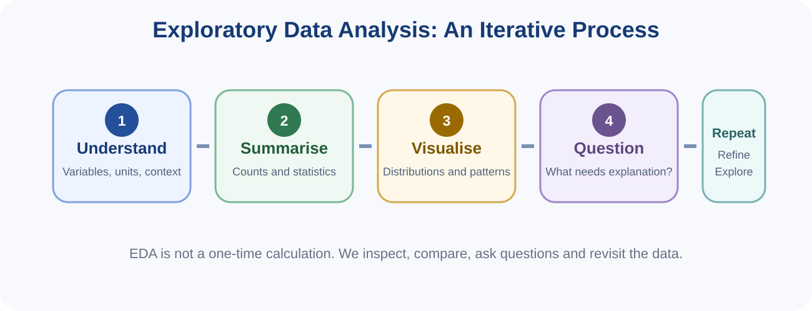
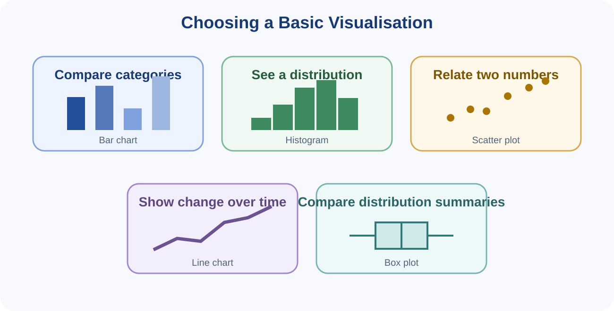
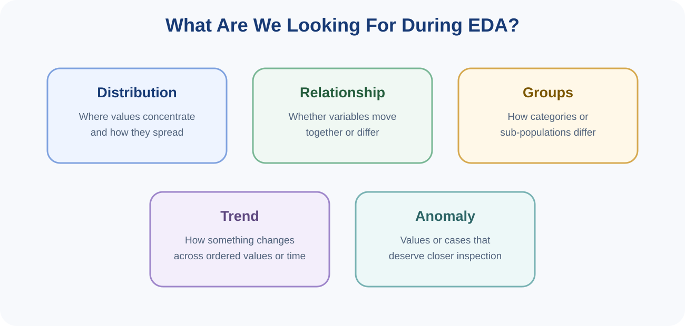

You can read these notes on screen or use the button below to print or save them as PDF.
Exploratory Data Analysis (EDA) is the process of examining a dataset in order to understand its structure, summarise its main characteristics, identify patterns, detect unusual observations and generate questions for deeper analysis. EDA usually combines numerical summaries with visualisation.
EDA comes after data have been collected and sufficiently prepared for use, but it is not always a perfectly separate stage. Exploration may reveal new quality problems that require the analyst to return to cleaning. For that reason, EDA is often iterative.

Descriptive statistics summarise the main characteristics of data. They help reduce a large collection of values into a smaller set of interpretable quantities. They describe the data that have been observed; by themselves, they do not establish why a pattern occurs.
| Measure | Meaning | When it is useful |
|---|---|---|
| Mean | The arithmetic average | Useful for numerical data when extreme values are not dominating the summary |
| Median | The middle value after sorting | Useful when data are skewed or contain extreme values |
| Mode | The most frequently occurring value or category | Useful for identifying the most common category or repeated value |
Suppose five monthly household expenditures are 100, 110, 120, 130 and 800. The unusually large value of 800 pulls the mean upward, while the median remains near the centre of most observations. This is why choosing a summary measure should depend on the distribution.
Two datasets can have the same mean but very different variability. Measures of spread describe how widely values are dispersed.
At this introductory stage, the important idea is conceptual: centre tells us what is typical; spread tells us how variable the data are.
For categorical data, useful summaries include the number of observations in each category and their percentages. For example, a class may contain students from Iringa, Arusha, Mbeya and Dar es Salaam. A frequency table shows how the observations are distributed across those regions.
A useful numerical summary consists of the minimum, first quartile, median, third quartile and maximum. This summary is closely related to the box plot and helps describe location, spread and possible unusual observations.
Visualisation helps people see patterns that may be difficult to detect from raw tables. The goal is not decoration. A good chart should answer a question clearly and honestly.

A bar chart compares values across categories. The categories are discrete, so bars are normally separated. Examples include number of students by region or average yield by crop type.
A histogram shows the distribution of a numerical variable by grouping values into intervals called bins. Adjacent bins touch because they represent intervals along a continuous numerical scale. Histograms help reveal concentration, spread, skewness, multiple peaks and unusual values.
A line chart is useful when values are ordered, especially across time. Examples include monthly rainfall, daily temperature, annual crop production or weekly website traffic.
A scatter plot displays pairs of numerical values. Each observation becomes a point. The plot helps reveal whether two variables appear related, whether the relationship is positive or negative, whether groups form clusters and whether unusual observations exist.
A box plot summarises a numerical distribution using quartiles and the median. It is useful for comparing distributions between groups, although students should remember that it compresses detail and should sometimes be combined with other views.

A distribution describes how values are arranged. Questions include: Where are most values concentrated? Is the distribution roughly symmetric or skewed? Are there multiple groups? How variable are the observations?
Two variables may appear to move together. For example, attendance and examination score might show a positive association. A scatter plot can reveal such a pattern, but the presence of a relationship does not prove that one variable causes the other.
EDA often compares subgroups. For example, average performance may be compared across regions, programmes or teaching methods. Differences should be interpreted carefully because group size, sampling and other characteristics can influence the comparison.
When data are ordered over time, EDA can reveal upward or downward trends, seasonal patterns, sudden changes or periods of unusual behaviour.
An anomaly is an observation that differs noticeably from the general pattern. It may be an error, an exceptional real case or evidence of a new phenomenon. As in Topic 2, investigation should come before deletion.
A pattern becomes useful when it is interpreted in context. Saying “students with higher attendance tend to have higher scores” describes a relationship. An insight goes further by explaining why the pattern matters, what further questions it raises and how it could inform a decision.